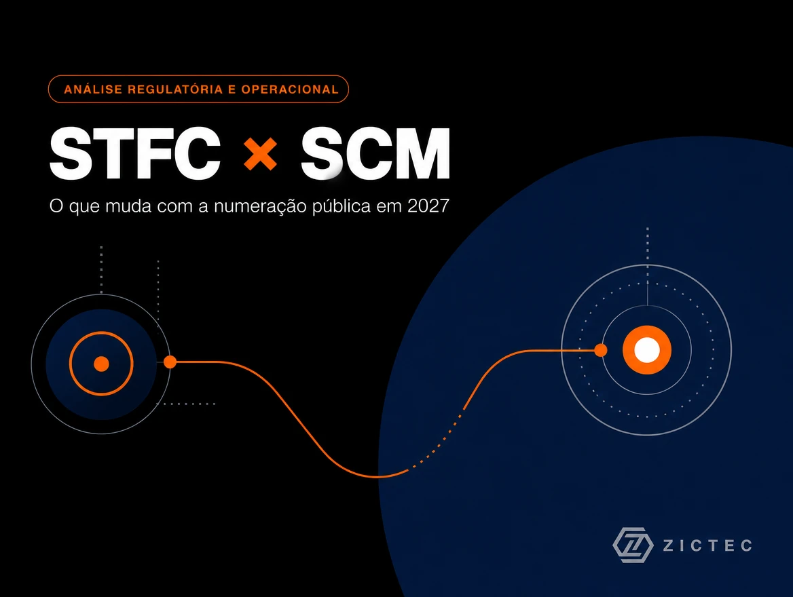
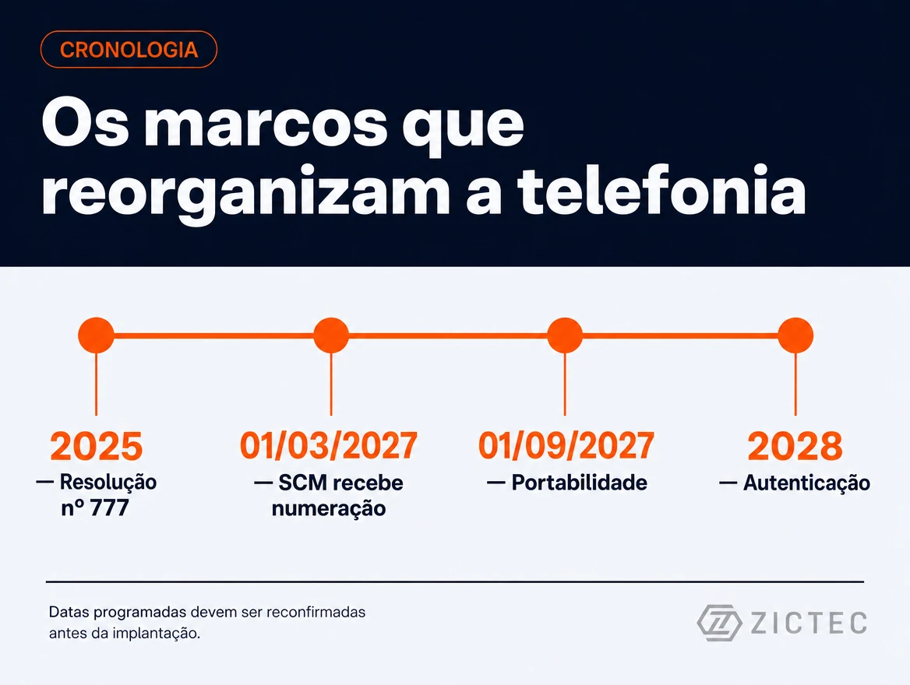
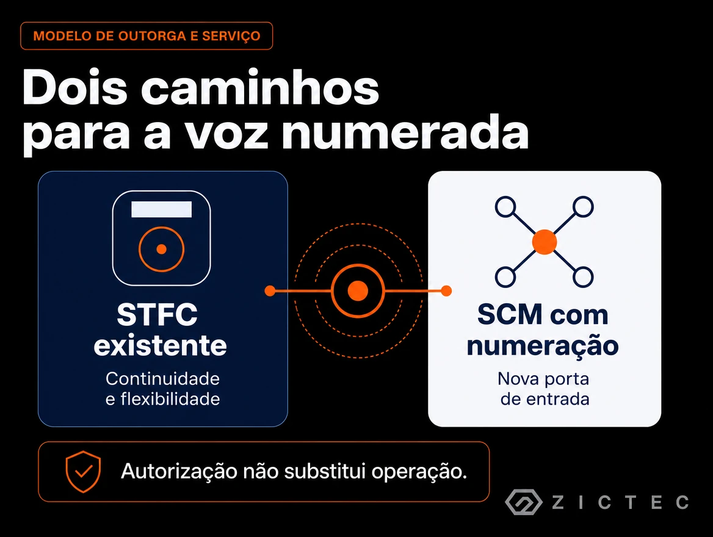

A Anatel abriu um novo caminho para a telefonia nos provedores de internet, mas isso não elimina o STFC nem cria uma operação de voz com poucas obrigações.
Há uma ideia recorrente no setor de que o STFC será extinto e substituído pelo SCM. Essa frase é simples, mas não descreve corretamente a mudança regulatória.
O que a Anatel fez foi permitir que o Serviço de Comunicação Multimídia use numeração pública e participe diretamente da comunicação telefônica. Ao mesmo tempo, definiu que novas autorizações de STFC deixarão de ser expedidas a partir de 1º de março de 2027. As autorizações de STFC já existentes não desaparecem por causa disso.
A mudança simplifica a entrada de novos prestadores em alguns aspectos. Em outros, cria novas exigências e preserva diferenças importantes entre SCM e STFC.
A autorização é geral, mas os serviços continuam separados
No modelo atual, a empresa obtém uma Autorização para Exploração de Serviços de Telecomunicações de Interesse Coletivo. Depois, notifica à Anatel os serviços que pretende prestar.
Por isso, a expressão informal "licença SIC" ajuda a entender a existência de uma autorização geral, mas não é a melhor terminologia para um documento técnico. STFC e SCM continuam sendo serviços distintos, notificados separadamente e sujeitos a regras próprias.
Uma mesma empresa pode ter a autorização geral e manter o STFC, o SCM ou ambos notificados. A autorização ampla não transforma os dois serviços em uma única licença operacional.
O fim das concessões não é o fim do STFC
A adaptação das concessões encerra o antigo regime de concessão das grandes operadoras e permite a continuidade do STFC em regime de autorização. A própria Anatel define a adaptação como o procedimento que extingue as concessões e possibilita que o serviço continue sendo prestado como autorizado.
Isso afeta de forma mais direta as antigas concessionárias e os compromissos ligados ao regime público. Prestadoras regionais que já exploravam STFC no regime privado não passaram por uma "troca de serviço": elas já eram autorizadas e continuam sendo prestadoras de STFC.
Também é importante separar serviço de tecnologia. STFC é uma classificação regulatória. SIP, VoIP, IMS, fibra, HFC, cobre e E1 são tecnologias ou meios de rede. A migração da telefonia para plataformas IP explica a convergência técnica, mas não extingue, sozinha, a categoria jurídica do STFC.

O que realmente muda em março de 2027
O art. 315 do Regulamento Geral dos Serviços de Telecomunicações determina que não serão expedidas novas autorizações de STFC a partir de 1º de março de 2027. A exceção expressa é a adaptação das antigas concessões para autorizações.
Na prática, haverá uma divisão clara:
- empresas que já tiverem STFC poderão conservar a autorização, conforme a regulamentação aplicável;
- empresas sem STFC não poderão obter uma nova autorização pelo procedimento normal depois da data de corte, salvo nova mudança regulatória;
- prestadoras SCM poderão estruturar telefonia com numeração pública dentro do novo modelo.
Para grupos empresariais com estratégia de voz, manter STFC em ao menos uma empresa pode preservar opções que o SCM não recebeu integralmente, como as modalidades STFC Local, Longa Distância Nacional e Longa Distância Internacional e determinados arranjos atacadistas. Isso não significa que todas as empresas do grupo precisem de STFC. A escolha deve considerar capilaridade, clientes, estrutura técnica, contratos, faturamento e responsabilidade regulatória.
Como será a numeração pública no SCM
A Resolução Anatel nº 777/2025 alterou o plano de numeração para destinar ao SCM números de nove dígitos iniciados por 6.
O cronograma consolidado prevê:
| Marco | Data prevista |
|---|---|
| Entrada das principais regras de numeração e interconexão do SCM | 1º de março de 2027 |
| Fim da expedição de novas autorizações de STFC | 1º de março de 2027 |
| Portabilidade numérica envolvendo o SCM | 1º de setembro de 2027 |
A diferença entre as datas importa. A liberação regulatória da numeração em março não significa que todas as prestadoras estarão prontas para vender telefonia no mesmo dia. Portabilidade, interconexão, bases de roteamento, autenticação, bilhetagem e homologações exigem implantação coordenada.
A Anatel também determinou que a prestadora SCM que usar numeração E.164 disponibilize pelo menos um POI ou PPI para tráfego telefônico em cada área de Código Nacional onde utilizar esses recursos.
Portanto, o projeto não se resume a habilitar um tronco SIP ou instalar um softswitch.
Voz sob SCM não é telefonia sem obrigações
A numeração pública coloca a prestadora SCM dentro de uma cadeia operacional parecida com a de uma operação telefônica completa.
Entre os temas que precisam ser estruturados estão:
- designação, ativação e uso correto da numeração;
- contratação e identificação do usuário final;
- direitos do consumidor e canais de atendimento;
- chamadas para serviços de emergência e de utilidade pública;
- interconexão, POI/PPI, roteamento e completamento das chamadas;
- portabilidade, BDR/BDO e atualização das rotas;
- bilhetagem, CDR, conciliação e rastreabilidade;
- autenticação de chamadas e mitigação de spoofing;
- segurança, antifraude e tratamento de chamadas abusivas;
- coletas e informações exigidas pela Anatel;
- documentação fiscal e contratos coerentes com a prestação do serviço.
Pode haver simplificação administrativa em relação a estruturas históricas do STFC. Isso é diferente de redução automática de responsabilidade.
Autenticação de chamadas deve entrar no projeto desde o início
O RGST obriga as prestadoras de serviços de interesse coletivo que usam numeração pública E.164 a autenticar as chamadas originadas na própria rede ou recebidas de outras redes. O regulamento prevê uma solução técnica centralizada, associada no setor à implementação de STIR/SHAKEN.
As atuais prestadoras de STFC e SMP receberam prazo de três anos para atender a essa obrigação. O texto não concede expressamente a mesma transição histórica às novas operações SCM com numeração.
A leitura prudente é simples: quem pretende lançar voz numerada sob SCM deve colocar autenticação, certificados, identidade do assinante, rastreabilidade e tratamento de falhas no desenho inicial. Não é seguro deixar esse tema para uma fase posterior.
O papel do STFC na longa distância e no atacado
O SCM poderá prestar comunicação telefônica aos próprios usuários, mas não receberá automaticamente todas as modalidades e prerrogativas do STFC.
O RGST preserva o papel do STFC de Longa Distância Nacional no encaminhamento de chamadas para fora da área local, quando aplicável, e do STFC de Longa Distância Internacional nas chamadas internacionais terminadas no Brasil.
Além disso, o regulamento proíbe que a rede SCM encaminhe tráfego simultaneamente originado e terminado em redes STFC. Em outras palavras, a autorização SCM não transforma a empresa em prestadora de transporte telefônico STFC-STFC de terceiros.
Isso não impede a SCM de usar meios próprios ou capacidade contratada para levar o tráfego de seus assinantes até uma interconexão no destino. Também não impede a contratação de trânsito, portas, enlaces, colocation ou interconexão indireta. O cuidado está em separar o tráfego dos próprios usuários da venda de uma modalidade regulatória que continua vinculada ao STFC.
Remuneração de rede: o que já está definido
A regulamentação estabelece que não será devida remuneração pelo uso das redes na relação entre STFC Local e SCM para troca de tráfego telefônico, com vigência prevista para 1º de março de 2027.
É uma regra de bill and keep para esse relacionamento específico. Não se trata da criação de um "DETRAF do SCM".
A regra não elimina CDRs, conciliação, auditoria, antifraude e contratos de interconexão. Também não impede cobranças separadas por portas, enlaces, transporte, capacidade, colocation, trânsito ou infraestrutura quando forem contratualmente cabíveis.
Ela também não deve ser estendida, sem análise, às relações SCM-SMP, SCM-SCM, SCM-STFC de longa distância ou ao tráfego internacional. Esses cenários dependem dos regulamentos, contratos e atos complementares aplicáveis.
A Anatel vai unificar as coletas de SCM e STFC?
A convergência técnica torna essa hipótese razoável. Uma empresa pode usar a mesma infraestrutura IP, estações, enlaces e sistemas para suportar internet e voz. Coletas inteiramente separadas podem produzir redundâncias.
A Resolução nº 774/2025 criou uma moldura horizontal para a coleta e a transferência de dados setoriais e permite que a Anatel crie, modifique ou extinga rotinas por meio de avaliação técnica e procedimento próprio.
Até agora, porém, não há norma publicada determinando uma coleta única de acessos SCM e STFC. A Agência pode consolidar processos sem apagar a separação entre os serviços. Mesmo uma coleta integrada pode manter campos distintos por serviço, município, tecnologia ou tipo de acesso.
Por isso, a unificação deve ser tratada como hipótese de evolução, não como obrigação já definida.
O SCM numerado será uma espécie de FVNO?
A comparação com uma operadora fixa virtual pode ajudar a explicar alguns modelos de mercado, mas não corresponde a uma categoria regulatória criada pela Anatel.
Uma prestadora SCM poderá ter seus próprios clientes, contratos, números e obrigações. Dependendo da arquitetura escolhida, poderá contratar de terceiros recursos de interconexão, longa distância, trânsito, transporte, portabilidade ou infraestrutura.
Nesse cenário, a operação pode se parecer economicamente com uma prestadora virtual. Juridicamente, continua sendo uma prestadora SCM em nome próprio. O RN1, por exemplo, é um identificador operacional da prestadora receptora na portabilidade e não prova, por si só, dependência estrutural de uma operadora hospedeira.
A expressão "FVNO" deve, portanto, ser usada apenas como analogia comercial.

STFC existente ou voz sob SCM: qual caminho escolher?
A resposta depende do objetivo do negócio.
| Tema | STFC existente | SCM com numeração pública |
|---|---|---|
| Continuidade | Autorizações existentes permanecem | Novo modelo a partir de 01/03/2027 |
| Novas autorizações | Fechadas após 01/03/2027 | A autorização geral e a notificação do SCM continuam disponíveis |
| Numeração | Plano tradicional do STFC | Nove dígitos iniciados por 6; números STFC portados formam hipótese distinta |
| Portabilidade SCM | Não se aplica como serviço receptor antes do marco | Prevista a partir de 01/09/2027 |
| Longa distância | Modalidades próprias Local, LDN e LDI | Não adquire automaticamente STFC-LDN/LDI |
| Interconexão | Modelo maduro e historicamente consolidado | POI/PPI por CN com uso de numeração, além de implantação operacional |
| Autenticação | Transição regulatória das prestadoras atuais | Planejamento prudente desde o início da operação numerada |
| Atacado | Maior amplitude dentro das modalidades STFC | Restrições, inclusive para tráfego STFC-STFC de terceiros |
| Obrigações | Corpo regulatório consolidado | Obrigações de voz, consumidor, numeração, interconexão, segurança e rastreabilidade |
Se a empresa quer lançar voz rapidamente, controlar numeração tradicional, operar modalidades de longa distância ou estruturar ofertas atacadistas, uma autorização STFC existente pode ter valor estratégico.
Se o objetivo é oferecer voz aos próprios clientes, sem necessidade dessas capacidades adicionais e com prazo para implantação, o SCM numerado pode ser suficiente.
O ponto decisivo não é qual sigla parece mais simples. É qual modelo sustenta corretamente a cadeia de contratos, numeração, faturamento, interconexão, tecnologia e responsabilidade perante o usuário e a Anatel.
O que precisa ser feito antes de decidir
Uma decisão segura começa com um diagnóstico curto:
- confirmar a autorização geral e os serviços efetivamente notificados no Mosaico;
- verificar Fistels e processos SEI relacionados;
- inventariar numeração, RN1/SPID, EOTs e situação na cadeia de portabilidade, quando aplicável;
- mapear contratos atuais com operadoras, fornecedores e clientes;
- identificar quem é o prestador real da telefonia e quem fatura o serviço;
- avaliar interconexão, trânsito, longa distância e cobertura por CN;
- revisar SBC, softswitch, CDR, bilhetagem, emergência e antifraude;
- preparar autenticação de chamadas e rastreabilidade;
- comparar custo, prazo e risco dos cenários STFC, SCM numerado e parceria atacadista.
Esperar a data de vigência para começar o projeto pode empurrar a entrada comercial para muitos meses depois. Numeração pública não cria uma operação pronta.
Conclusão
O STFC não acaba em 2027. O que se encerra, segundo o cronograma hoje vigente, é a expedição de novas autorizações de STFC.
Ao mesmo tempo, o SCM ganha um caminho próprio para comunicação telefônica com numeração pública. Esse caminho pode reduzir barreiras de entrada e eliminar algumas redundâncias, mas vem acompanhado de interconexão, portabilidade, autenticação, atendimento, segurança, rastreabilidade e outras obrigações.
Para quem já possui STFC, a autorização merece ser analisada como uma posição regulatória que preserva opções. Para quem pretende operar voz pelo SCM, o trabalho deve começar antes de março de 2027 e considerar a portabilidade apenas a partir de setembro.
A simplificação existe. A telefonia sem responsabilidade regulatória, não.
Como a ZICTEC pode ajudar
A ZICTEC atua na interseção entre engenharia, regulação e operação de voz. Podemos apoiar:
- auditoria de autorizações, notificações, Fistels e processos;
- matriz de decisão entre STFC, SCM numerado e parceria com terceiro;
- desenho de numeração, interconexão, longa distância e portabilidade;
- revisão da cadeia contratual, fiscal e operacional;
- implantação de SBC, softswitch, roteamento, bilhetagem e CDR;
- autenticação de chamadas, STIR/SHAKEN e mitigação de spoofing;
- entrada controlada em produção e suporte contínuo.
Antes de investir, vale responder com precisão: quem presta o serviço, quem controla a numeração, como a chamada completa e quem responde quando algo falha?
Fontes oficiais
- Resolução Anatel nº 777/2025 — Regulamento Geral dos Serviços de Telecomunicações. Referências principais: arts. 6º, 10, 17, 18, 22, 23; RGST arts. 17, 18, 60, 62, 63, 77, 78 e 315; cronograma dos Acórdãos nº 202/2025 e nº 321/2025.
- Serviços de Interesse Coletivo — Anatel. Explica a autorização geral e a notificação prévia dos serviços.
- Resolução Anatel nº 720/2020 — Regulamento Geral de Outorgas.
- Adaptação das concessões de STFC — Anatel. A Agência descreve a adaptação como extinção das concessões e continuidade do serviço em regime de autorização.
- Resolução Anatel nº 741/2021. Regulamenta a adaptação das concessões de STFC para autorizações.
- Resolução Anatel nº 749/2022 — Regulamento de Numeração, com alterações da Resolução nº 777/2025.
- Resolução Anatel nº 693/2018 — Regulamento Geral de Interconexão.
- Resolução Anatel nº 774/2025 — Coleta e Transferência de Dados Setoriais.
Leituras setoriais complementares
- Rafael Bucco, TeleSíntese, 7 ago. 2025: Anatel adia numeração pública no SCM para março de 2027.
- Rafael Bucco, TeleSíntese, 3 abr. 2025: Anatel regulamenta uso de numeração pública para SCM.
- Daniel Douek e Giovanna Gomes Soares, TeleSíntese/Mundie Advogados, 9 set. 2025: Avanços, lacunas e desafios da regulamentação de números para SCM.
Nota editorial: este artigo considera a regulamentação e o cronograma disponíveis em 23 de setembro de 2026. Como as datas já foram alteradas anteriormente, elas devem ser revalidadas antes da publicação e antes de qualquer decisão de investimento.